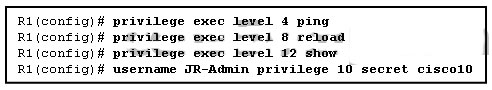
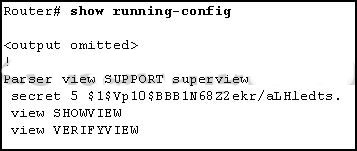

1.¿Qué dos características se aplican a las supervisiones de acceso CLI basadas en roles? (Escoge dos.)
- Una supervisión específica no puede tener comandos agregados directamente. *
- Las vistas de CLI tienen contraseñas, pero las vistas de supervisión no tienen contraseñas.
- Una única vista de supervisión puede compartirse entre varias vistas de CLI.
- Los usuarios que inician sesión en una vista supervisada pueden acceder a todos los comandos especificados en las vistas de la CLI asociadas. *
- @Javi__Super
Al utilizar una supervisión, un administrador puede asignar usuarios o grupos de usuarios a las vistas de la CLI que contienen un conjunto específico de comandos a los que pueden acceder dichos usuarios. Los comandos no se pueden agregar directamente a una supervisión, sino que deben agregarse a una vista de la CLI y la vista de la CLI debe agregarse a la supervisión.
2.¿Qué tres tipos de vistas están disponibles al configurar la función de acceso de la CLI basada en roles? (Elige tres.)
- supervisión *
- vista de administrador
- vista de raíz *
- Vista CLI *
- @Javi__Super
Hay tres tipos de vistas de CLI basadas en roles:
1) vista de raíz
2) vista de CLI
3) supervisión
3.Si AAA ya está habilitado, ¿qué tres pasos de CLI se requieren para configurar un enrutador con una vista específica? (Elige tres.)
- Cree una vista de supervisión con el comando de vista de nombre de vista de analizador.
- Asigna comandos a la vista. *
- Cree una vista usando el comando de vista de nombre de vista de analizador. *
- Asigne una contraseña secreta a la vista. *
- @Javi__Super
Hay cinco pasos involucrados para crear una vista en un enrutador Cisco.
1) AAA debe estar habilitada.
2) la vista debe ser creada.
3) Se debe asignar una contraseña secreta a la vista.
4) los comandos deben ser asignados a la vista.
5) se debe salir del modo de configuración de la vista.
4.¿Qué ocurre después de que se generen las claves RSA en un enrutador Cisco para preparar la administración segura del dispositivo?
- Las claves generadas pueden ser utilizadas por SSH. *
- El tamaño de la clave de propósito general se debe especificar para la autenticación con la clave criptográfica gen rsa general-keys moduluscommand.
- Todos los puertos vty se configuran automáticamente para que SSH proporcione una administración segura.
- Las claves se deben poner a cero para restablecer Secure Shell antes de configurar otros parámetros.
- @Javi__Super
Una vez que se generan las claves RSA, SSH se habilita automáticamente.
5.¿Qué tres afirmaciones describen las limitaciones en el uso de niveles de privilegio para asignar la autorización de comandos? (Elige tres.)
- Crear una cuenta de usuario que necesite acceso a la mayoría de los comandos, pero no a todos, puede ser un proceso tedioso. *
- Las vistas son necesarias para definir los comandos de la CLI a los que puede acceder cada usuario.
- Los comandos establecidos en un nivel de privilegio más alto no están disponibles para los usuarios con privilegios más bajos. *
- No hay control de acceso a interfaces específicas en un enrutador. *
- @Javi__Super
Un administrador puede crear niveles de privilegios personalizados y asignar diferentes comandos a cada nivel. Sin embargo, este método de controlar el nivel de acceso al enrutador tiene limitaciones. El uso de niveles de privilegio no permite controlar el acceso a interfaces o puertos específicos y la disponibilidad de comandos no se puede personalizar en todos los niveles.
6.¿Qué comando se debe emitir para habilitar las mejoras de inicio de sesión en un enrutador Cisco?
- privilegio nivel exec
- retraso de inicio de sesión
- bloque de inicio de sesión para *
- banner motd
- @Javi__Super
Las mejoras de inicio de sesión de Cisco IOS pueden aumentar la seguridad de las conexiones de inicio de sesión virtuales a un enrutador. Aunque el retraso de inicio de sesión es un comando de mejora de inicio de sesión, todas las mejoras de inicio de sesión se desactivan hasta que se configura el comando de bloqueo de inicio de sesión.
7.Un administrador definió una cuenta de usuario local con una contraseña secreta en el enrutador R1 para usar con SSH. ¿Qué tres pasos adicionales se requieren para configurar R1 para aceptar solo las conexiones SSH cifradas? (Elige tres.)
- Habilitar las sesiones entrantes de SSH vty. *
- Configure el nombre de dominio IP en el enrutador. *
- Habilitar las sesiones entrantes vty telnet.
- Genera las claves SSH. *
- @Javi__Super
Hay cuatro pasos para configurar el soporte SSH en un enrutador Cisco:
Paso 1: configure el nombre de dominio.
Paso 2: Generar claves secretas unidireccionales.
Paso 3: Crea un nombre de usuario y contraseña locales.
Paso 4: habilitar SSH entrante en una línea vty.
8.¿Qué conjunto de comandos se requieren para crear un nombre de usuario de administrador, aplicar hash a la contraseña con MD5 y forzar al enrutador a acceder a la base de datos de nombre de usuario interna cuando un usuario intenta acceder a la consola?
- R1 (config) # nombre de usuario admin password
Admin01pa55
R1 (config) # line con 0
R1 (config-line) # login local
- R1 (config) # nombre de usuario admin secret
Admin01pa55
R1 (config) # line con 0
R1 (config-line) # login local *
- R1 (config) # nombre de usuario admin Admin01pa55
encr md5
R1 (config) # line con 0
R1 (config-line) # login local
- R1 (config) # nombre de usuario admin password
Admin01pa55
R1 (config) # line con 0
R1 (config-line) # login
- @Javi__Super
Para configurar una cuenta de usuario con una contraseña encriptada, se usa el comando secreto de nombre de usuario. El comando line con 0 define la línea de la consola como configurada para el inicio de sesión y el comando local de inicio de sesión le dice al enrutador que busque las credenciales de usuario en la base de datos local.
9.Consulte la presentación. ¿Qué afirmación sobre la cuenta de administrador de JR es verdadera?

- JR-Admin solo puede emitir comandos ping.
- JR-Admin puede emitir comandos de mostrar, ping y recargar.
- JR-Admin puede emitir comandos de depuración y recarga.
- JR-Admin puede emitir comandos de ping y recargar *
- @Javi__Super
Cuando se emite el comando de nombre de privilegio 10, se permite al usuario el acceso a comandos con un nivel de privilegio de 10 o menos (0-10).
10.¿Cuál es el nivel de privilegio predeterminado de las cuentas de usuario creadas en los enrutadores Cisco?
- 0
- 15
- 1 *
- dieciséis
- @Javi__Super
Hay 16 niveles de privilegios que pueden configurarse como parte del comando de nombre de usuario, que van de 0 a 15. De manera predeterminada, si no se especifica ningún nivel, la cuenta tendrá el nivel de privilegio 1,
11.¿Qué tres áreas de seguridad del enrutador deben mantenerse para asegurar un enrutador de borde en el perímetro de la red? (Elige tres.)
- seguridad de acceso remoto
- endurecimiento del enrutador *
- seguridad del sistema operativo *
- seguridad física *
- @Javi__Super
Hay tres áreas de seguridad del enrutador para mantener:
1) seguridad física
2) refuerzo del enrutador
3) seguridad del sistema operativo
12.¿Qué práctica de seguridad recomendada impide que los atacantes realicen la recuperación de la contraseña en un enrutador Cisco IOS con el fin de obtener acceso al modo EXEC privilegiado?
- Ubique el enrutador en una habitación segura y cerrada que sea accesible solo para personal autorizado. *
- Configure un control administrativo seguro para garantizar que solo el personal autorizado pueda acceder al enrutador.
- Mantenga una copia segura del enrutador Imagen de Cisco IOS y el archivo de configuración del enrutador como copia de seguridad.
- Aprovisione el enrutador con la máxima cantidad de memoria posible.
- @Javi__Super
De las tres áreas de seguridad del enrutador, seguridad física, endurecimiento del enrutador y seguridad del sistema operativo, la seguridad física consiste en ubicar el enrutador en una habitación segura a la que solo pueda acceder el personal autorizado que pueda realizar la recuperación de la contraseña.
13.Consulte la presentación. En función de la salida del comando show running-config, ¿qué tipo de vista es SUPPORT?

- Vista de CLI, que contiene los comandos SHOWVIEW y VERIFYVIEW
- supervisión, que contiene vistas de SHOWVIEW y VERIFYVIEW *
- Vista secreta, con una contraseña cifrada de nivel 5.
- Vista de raíz, con una contraseña secreta cifrada de nivel 5
- @Javi__Super
La vista de CLI basada en roles de supervisión llamada SUPPORT se ha configurado en el enrutador. La vista de servicios SUPPORT se compone de dos vistas CLI denominadas SHOWVIEW y VERIFYVIEW.
14.Un administrador de red advierte que los intentos fallidos de inicio de sesión han provocado que un enrutador entre en modo silencioso. ¿Cómo puede el administrador mantener el acceso remoto a las redes incluso durante el modo silencioso?
- El comportamiento en modo silencioso se puede habilitar a través de un comando de grupo de acceso ip en una interfaz física.
- El comportamiento del modo silencioso solo evitará que cuentas de usuarios específicos intenten autenticarse.
- El comportamiento del modo silencioso se puede anular para redes específicas mediante el uso de una ACL. *
- Un administrador puede desactivar el comportamiento del modo silencioso usando SSH para conectarse.
- @Javi__Super
El modo silencioso evita cualquier intento de inicio de sesión por un período de tiempo. El modo silencioso se habilita a través del comando login-modo silencioso access-class. El comportamiento en modo silencioso se puede anular para redes específicas al construir e implementar una lista de control de acceso (ACL).
15.¿Cuál es una característica de la característica de configuración flexible de Cisco IOS?
- Mantiene una copia de trabajo segura del programa de inicio bootstrap.
- Una vez emitido, el comando de configuración de arranque seguro actualiza automáticamente el archivo de configuración a una versión más nueva después de que se hayan ingresado los nuevos comandos de configuración.
- Una instantánea de la configuración en ejecución del enrutador se puede tomar y archivar de forma segura en un almacenamiento persistente. *
- El comando de arranque de imagen segura funciona correctamente cuando el sistema está configurado para ejecutar una imagen desde un servidor TFTP.
- @Javi__Super
La función de configuración flexible de Cisco IOS mantiene una copia de trabajo segura del archivo de imagen IOS del enrutador y una copia del archivo de configuración en ejecución. El comando de arranque de imagen segura funciona correctamente solo cuando el sistema está configurado para ejecutar una imagen desde una unidad flash con una interfaz ATA. El comando secure boot-config se debe usar repetidamente para actualizar el archivo de configuración a una versión más nueva después de que se hayan emitido los nuevos comandos de configuración. Una instantánea de la configuración en ejecución del enrutador se puede tomar y archivar de forma segura en un almacenamiento persistente con el comando secure boot-config.
16.¿Cuáles son dos razones para habilitar la autenticación del protocolo de enrutamiento OSPF en una red? (Escoge dos.)
- Proporcionar seguridad de datos a través del cifrado.
- para asegurar una convergencia de red más rápida
- para evitar que el tráfico de datos se redirija y luego se descarte *
- para evitar la redirección del tráfico de datos a un enlace inseguro *
- @Javi__Super
La razón para configurar la autenticación OSPF es mitigar los ataques de protocolo de enrutamiento, como la redirección del tráfico de datos a un enlace inseguro y la redirección del tráfico de datos para descartarlo. La autenticación OSPF no proporciona una convergencia de red más rápida, un enrutamiento más eficiente o el cifrado del tráfico de datos.
17.¿Qué dos opciones pueden ser configuradas por Cisco AutoSecure? (Escoge dos.)
- habilitar contraseña secreta *
- dirección IP de la interfaz
- SNMP
- banner de seguridad *
- @Javi__Super
AutoSecure ejecuta un script que primero hace recomendaciones para corregir las vulnerabilidades de seguridad y luego modifica la configuración de seguridad del enrutador. AutoSecure puede bloquear las funciones del plano de administración y los servicios del plano de reenvío y las funciones de un enrutador, lo que incluye configurar una contraseña de habilitación y una pancarta de seguridad.
18.¿Qué tres funciones proporciona el servicio de registro de syslog? (Elige tres.)
- configurando el tamaño del búfer de registro
- especificando donde se almacena la información capturada *
- recopilar información de registro *
- Distinguir entre la información a capturar y la información a ignorar *
- @Javi__Super
Las operaciones de Syslog incluyen recopilar información, seleccionar qué tipo de información capturar y dirigir la información capturada a una ubicación de almacenamiento. El servicio de registro almacena los mensajes en un búfer de registro limitado en el tiempo y no puede retener la información cuando se reinicia un enrutador. Syslog no autentica ni encripta mensajes.
19.¿Para qué está diseñada la función de Control Plane Policing (CoPP)?
- Deshabilitar los servicios de control de avión para reducir el tráfico general.
- evitar que el tráfico innecesario abrume el procesador de ruta *
- Dirigir todo el exceso de tráfico fuera del proceso de la ruta.
- Gestionar los servicios prestados por el plano de control.
- @Javi__Super
Control Plane Policing (CoPP) no administra ni deshabilita ningún servicio. No dirige el tráfico desde el procesador de ruta, sino que evita que el tráfico innecesario llegue al procesador de ruta.
20.¿Qué es un requisito para utilizar la función de protocolo de copia segura?
- Al menos un usuario con nivel de privilegio 1 debe configurarse para la autenticación local.
- Se debe emitir un comando para habilitar la funcionalidad del lado del servidor SCP. *
- Una transferencia solo puede originarse desde clientes SCP que son enrutadores.
- El protocolo Telnet debe configurarse en el lado del servidor SCP.
- @Javi__Super
La función de protocolo de copia segura se basa en SSH y requiere que la autenticación y autorización AAA se configuren para que el enrutador pueda determinar si el usuario tiene el nivel de privilegio correcto. Para la autenticación local, debe configurarse al menos un usuario con nivel de privilegio 15. Las transferencias pueden originarse desde cualquier cliente SCP, ya sea que ese cliente sea otro enrutador, conmutador o estación de trabajo. El comando ip scp server enable se debe emitir para habilitar la funcionalidad del lado del servidor SCP.
21.¿Cuál es una característica del MIB?
- Los OID están organizados en una estructura jerárquica. *
- La información en el MIB no se puede cambiar.
- Existe un árbol MIB independiente para cualquier dispositivo dado en la red.
- La información se organiza de manera plana para que SNMP pueda acceder a ella rápidamente.
- @Javi__Super
Los mensajes SNMP de configuración, obtención y captura se utilizan para acceder y manipular la información contenida en la MIB. Esta información está organizada jerárquicamente para que SNMP pueda acceder a ella rápidamente. Cada pieza de información dentro de la MIB recibe un ID de objeto (OID), que se organiza según los estándares RFC en una jerarquía de OID. El árbol MIB para cualquier dispositivo dado incluye sucursales con variables comunes a muchos dispositivos de red y sucursales con variables específicas para ese dispositivo o proveedor.
22.¿Qué tres elementos solicitan una respuesta del usuario durante la configuración interactiva de AutoSecure? (Elige tres.)
- Direcciones IP de interfaces
- contenido de un banner de seguridad *
- habilitar contraseña secreta *
- habilitar contraseña *
- @Javi__Super
Durante la configuración de AutoSecure, se producen los siguientes pasos:
- Se ingresa el comando de seguridad automática.
- El asistente recopila información sobre las interfaces externas.
- AutoSecure asegura el lugar de administración al deshabilitar servicios innecesarios.
- AutoSecure solicita un banner de seguridad.
- AutoSecure solicita contraseñas y habilita las funciones de contraseña e inicio de sesión.
- Las interfaces están aseguradas.
- El plano de reenvío está asegurado.
23.Un ingeniero de redes está implementando seguridad en todos los enrutadores de la empresa. ¿Qué dos comandos deben emitirse para forzar la autenticación a través de la contraseña 1A2b3C para todas las interfaces habilitadas para OSPF en el área de la red troncal de la red de la empresa? (Escoge dos.)
- área 0 autenticación mensaje-resumen *
- ip ospf message-digest-key 1 md5 1A2b3C *
- nombre de usuario OSPF contraseña 1A2b3C
- habilitar contraseña 1A2b3C
- @Javi__Super
Los dos comandos necesarios para configurar la autenticación a través de la contraseña 1A2b3C para todas las interfaces habilitadas para OSPF en el área de la red troncal (Área 0) de la red de la empresa serían ip ospf message-digest-key 1 md5 1A2b3C y área 0 . El resumen de mensaje de autenticación del área de opción 1 es incorrecto porque se refiere al Área 1, no al Área 0. La opción habilitar la contraseña 1A2b3C es incorrecta porque establecería la contraseña del modo EXEC privilegiado en lugar de la contraseña de autenticación OSPF. La opción de nombre de usuario OSPF contraseña 1A2b3C es necesaria para crear una base de datos de nombre de usuario en un enrutador, que no es necesaria con la autenticación OSPF.
24.¿Cuál es el propósito de usar el comando de contraseña md5 de ip ospf message-digest-key-key y el comando del área area-id authentication message-digest en un enrutador?
- para configurar la autenticación OSPF MD5 globalmente en el enrutador *
- para habilitar la autenticación OSPF MD5 en una base por interfaz
- Facilitar el establecimiento de adyacencias vecinas.
- para cifrar las actualizaciones de enrutamiento OSPF
- @Javi__Super
Para configurar la autenticación OSPF MD5 a nivel mundial, se emiten el comando de configuración de la interfaz de contraseña md5 ip ospf message-digest-key y el comando de configuración del enrutador del área ID-mensaje autenticación de resumen de mensaje. Para configurar la autenticación OSPF MD5 por interfaz, se emiten el comando de configuración de la interfaz de contraseña md5 ip ospf message-digest-key y el comando de configuración de la interfaz ip ospf message-digest interface. La autenticación no encripta las actualizaciones de enrutamiento OSPF. Los requisitos para establecer adyacencias de vecinos de enrutador OSPF son independientes de la autenticación.
25.¿Qué tres acciones se producen al agregar mejoras de inicio de sesión de Cisco IOS al proceso de inicio de sesión del enrutador? (Elige tres.)
- crear mensajes de syslog *
- ralentizar un ataque activo *
- deshabilitar los inicios de sesión de los hosts especificados *
- permitir solo el acceso seguro a la consola
- @Javi__Super
Las mejoras de inicio de sesión de Cisco IOS brindan mayor seguridad de tres maneras:
Implementar retrasos entre intentos de inicio de sesión sucesivos
Habilitar el cierre de inicio de sesión si se sospechan ataques DoS
Generar mensajes de registro del sistema para la detección de inicio de sesión Los
banners y la autenticación de contraseña están desactivados de forma predeterminada y deben activarse mediante un comando. Las mejoras de inicio de sesión virtual no se aplican a las conexiones de consola.